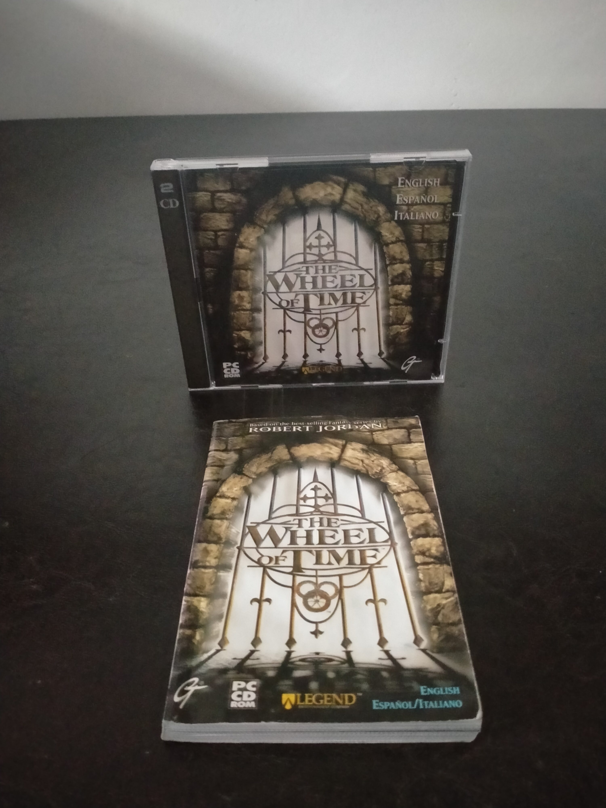

Ficha #000000
The Wheel of Time
The Wheel of Time es un videojuego de acción y aventura en primera persona publicado en 1999 y basado en la serie literaria de fantasía de Robert Jordan. Desarrollado por Legend Entertainment, estudio especializado en adaptaciones narrativas y aventuras para PC, utiliza una versión modificada del Unreal Engine para representar fortalezas, ruinas, mazmorras y escenarios inspirados en el universo de La Rueda del Tiempo. En lugar de un arsenal convencional, el sistema de combate se articula mediante ter'angreal que permiten lanzar ataques mágicos, levantar defensas, colocar trampas y alterar el desplazamiento de personajes y enemigos. Su campaña combina exploración, resolución de situaciones, combates y una historia protagonizada por Elayna Sedai, creada específicamente para el juego. Esta edición europea en estuche jewel case se distribuyó en dos CD-ROM y presenta documentación multilingüe en inglés, español e italiano.
- Formato
- Jewel Case
- Plataforma
- Win95 Win98
- Género
- Acción en primera persona Shooter en primera persona Fantasía Aventura
- Serie
- Todos Jewel Case
- Desarrollador
- Legend Entertainment
- Distribuidor
- GT Interactive Software
- EAN
- —
Contenido de la edición
- Estuche jewel case
- 2 CD-ROM
- Manual en inglés, español e italiano
Preservación
- Protección
- No determinado
- Formato recomendado
- BIN/CUE
- Jugable en virtualización
- Sí
Preservar ambos CD-ROM mediante imágenes completas y documentar su orden de instalación. Se recomienda BIN/CUE para conservar la estructura original de los discos y verificar posteriormente la instalación y ejecución en un entorno Windows 95/98 virtualizado con aceleración gráfica compatible.